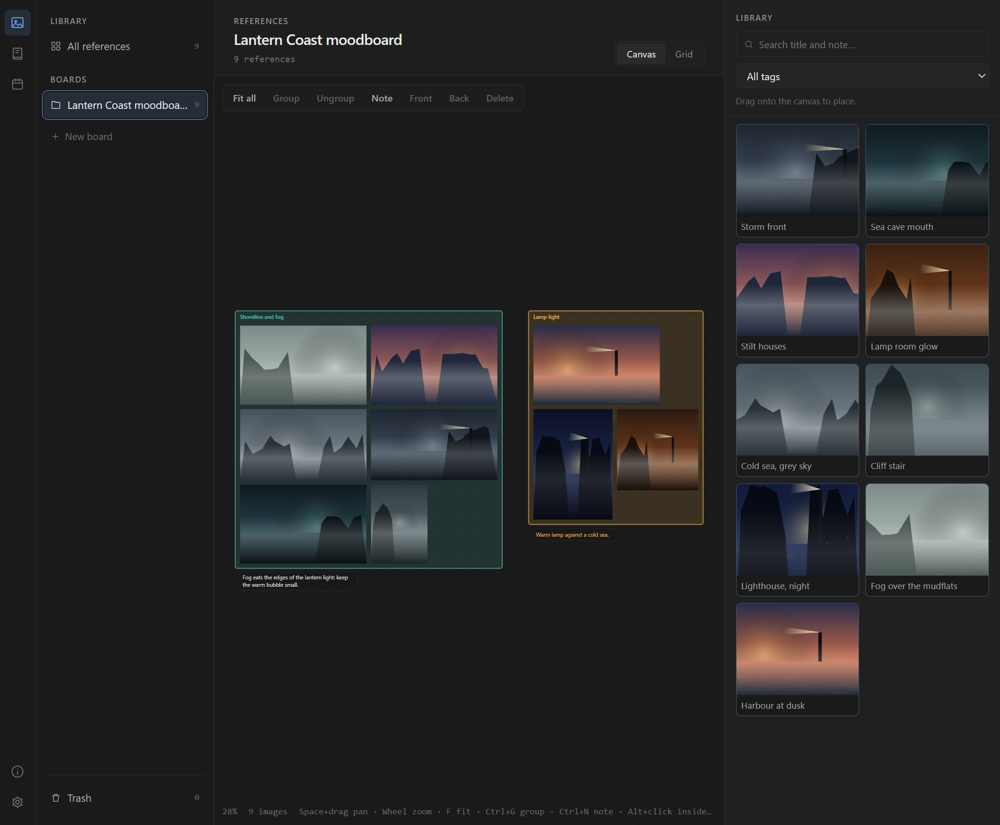
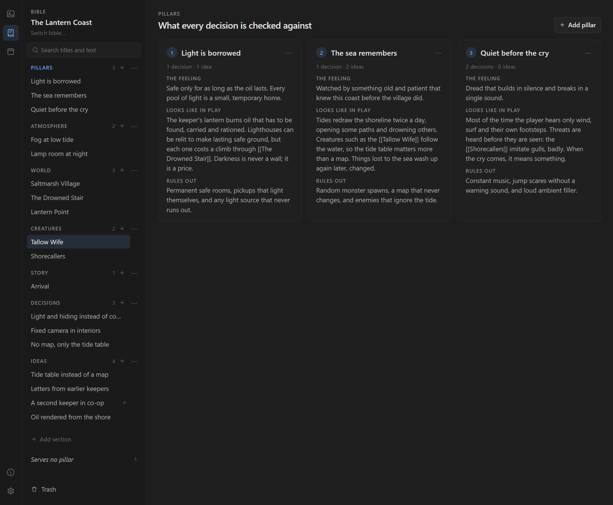
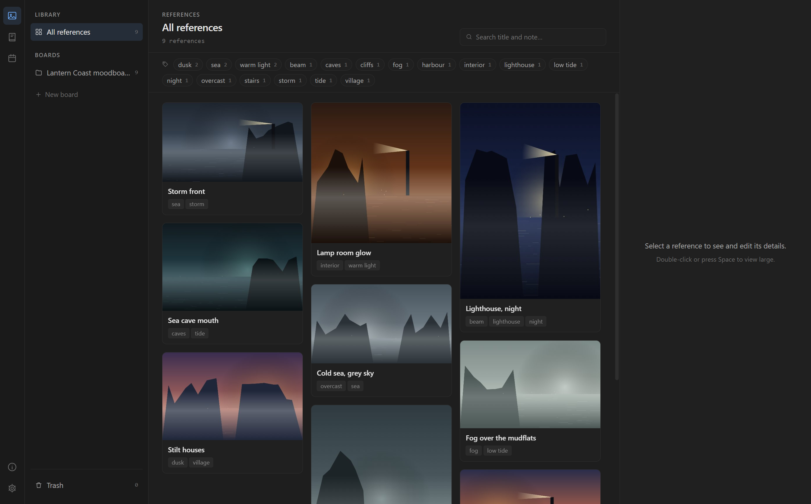

Loam
Grow your game from intent.
A free, open-source desktop app for indie developers who make games creatively and artistically. Your references, your game's intent and your learning in one place, as files you own.
Windows 10 and 11, 64-bit. The installer is not code-signed yet: if SmartScreen warns you, choose More info, then Run anyway.

What it helps with
Collect references
A library with tags and search, and canvas boards with groups and notes.
Write down your game's intent
A creative bible: design pillars, world rules, places, creatures, characters, a decision log and an idea parking lot, all checked against your pillars.
See yourself learn
A study journal with sessions, topics and side-by-side comparison of your practice work over time.


Principles
- Your vision decides. Loam keeps track of what you want the game to be. It never decides for you.
- Your files, your machine. Bibles and journals are plain Markdown folders you can open in any editor, put in git and share with a teammate. Nothing leaves your computer unless you explicitly ask.
- Start small, grow with the game. No 40-page design document up front. One question to start: What should players feel?
- Never punish. No streaks, no guilt. Learning and making games is hard enough.
- Indie first. Built for solo developers and small teams, not studio pipelines.
Private by design
No accounts, no analytics, no telemetry. Your library stays on your computer. Optional helpers (tag suggestions and study recaps from a small model that runs on your computer) are off by default, and nothing is applied without your click.